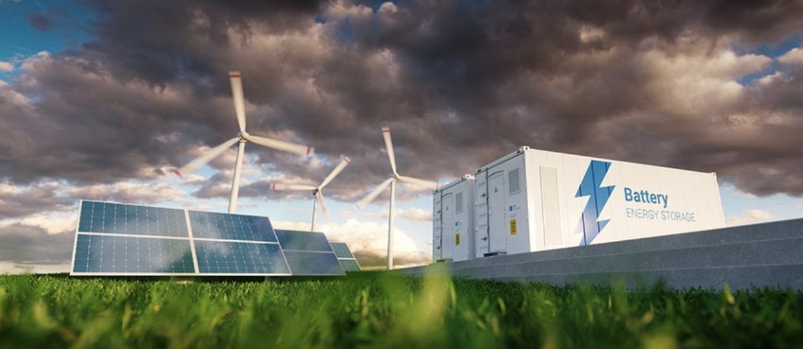
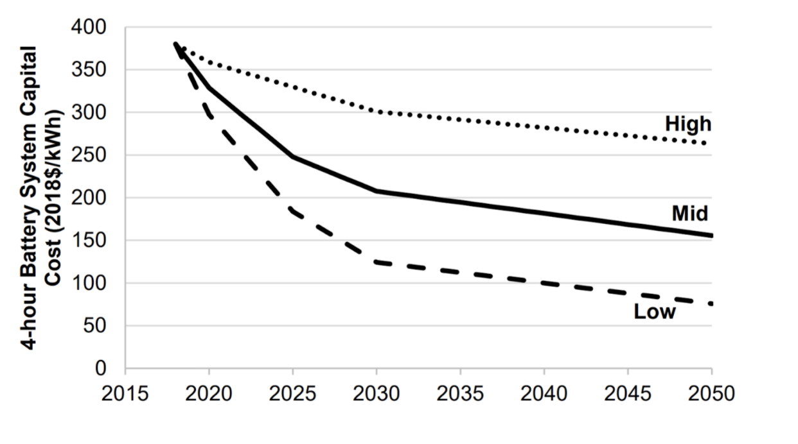

12 hour energy storage at low cost
The plunging cost and surging deployment of solar power and wind power will make them the lowest cost “base price” sources of electricity worldwide. However, solar and wind are variable, and their power output fluctuates with day/night cycles, weather, and by season. To “firm” those cheap energy sources, the world is increasingly turning to energy storage.
Image: Courtesy NREL
Today, grid storage is dominated by pumped hydroelectric power. However, this is severely limited by geography. New grid storage deployments have primarily used lithium-ion batteries, frequently for 4 hours of duration. These 4-hour batteries are likely to continue to drop in price, as the projection below from NREL shows.
Battery cost projections for 4-hour lithium ion systems
To reach longer durations, including 12 hours to solve the day/night cycle issue, lithium-ion batteries are prohibitively expensive. The cost scales roughly linearly by duration.
Clearly the world will need new energy storage approaches. Fortunately, a number of methods are in the works and are reaching competitive deployment now. Among them:
- 1. Gravity-Based Energy Storage. Our portfolio company EnergyVault stores energy by using excess electricity to lift concrete bricks. When electricity is needed, those bricks are lowered, turning a generator and producing power. This approach has the advantage that the actual bricks used for energy storage are extremely low cost and contain no scarce minerals, making it cost-effective to add additional hours.
Image: Courtesy EnergyVault
- 2. Flow Batteries. Flow batteries are made from earth-abundant materials, like iron, and have a cost similar to 4-hour lithium-ion. But they excel at longer durations, as most of the cost is in their peak power output. The cost of raw materials to add additional hours of storage (at the same max power output) is extremely low. Examples of leading flow companies already reaching commercialization include ESS Inc.
- 3. Other approaches including Zinc-air batteries, compressed air energy storage, other flow battery chemistries, and thermal storage are all being developed.
By the middle of this decade, these new grid electricity storage technologies will make it possible to store 12 hours of electricity at low cost, solving the day/night cycle problem and enabling far greater use of renewable energy sources like increasingly cheap solar and wind.